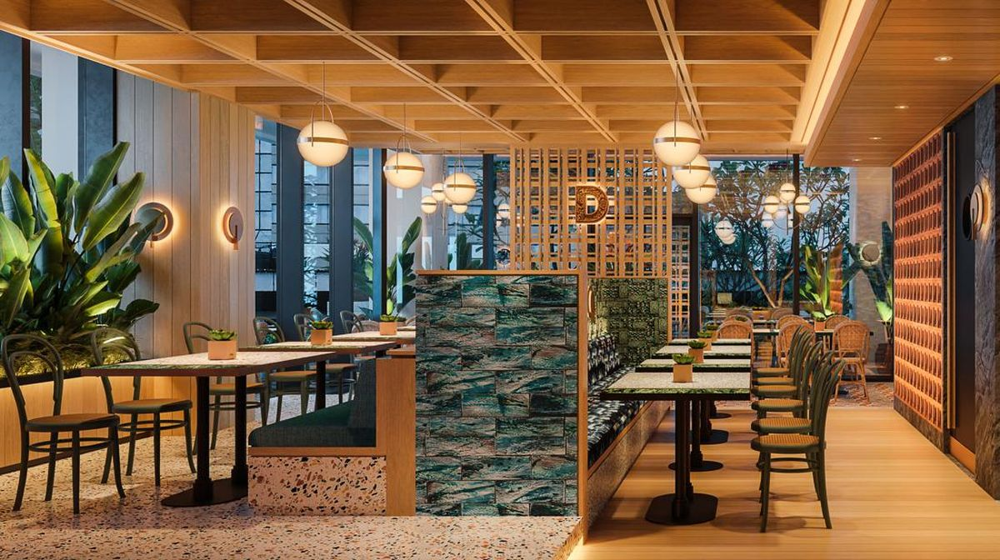
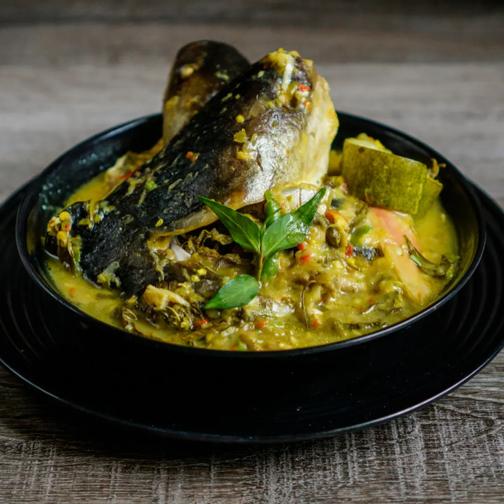
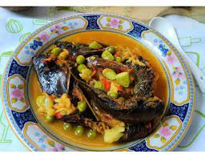
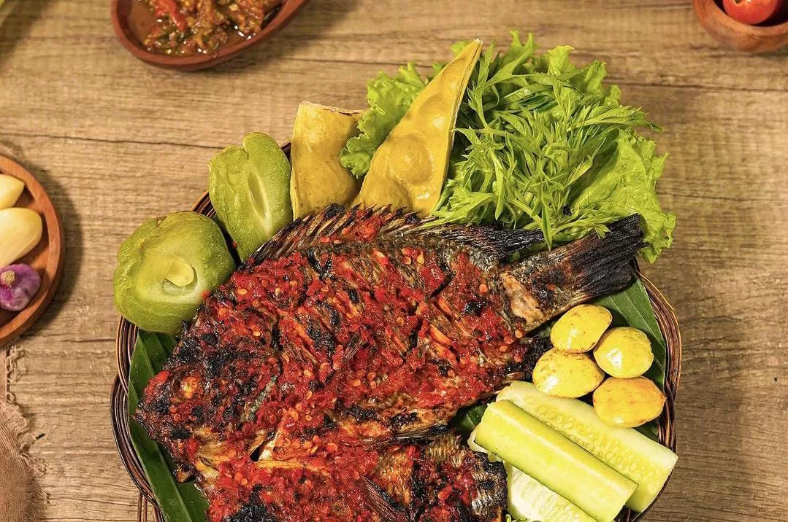

Cita rasa makanan khas Sumatra yang selalu melekat pada tiap gigitan
Tiap makanan dapet daging 1 kilo loh! gaada lawan wak!

Restoran ini dibuat sejak tahun 2025 oleh seorang murid Santa Angela Bandung yang hendak melestarikan makanan tradisional khas Sumatra. Beliau lahir di Yogyakarta dan menempuh pendidikan di Santa Angela Bandung selama SD-SMP-SMA. Beliau merantau dari Jawa Barat ke Sumatra untuk mempelajari cara membuat makanan berbahan tempoyak. Saat beliau sudah cukup ilmu, beliau kembali ke Bandung dan mulai membuka warung makan kecil pinggir jalan (PKL). Usahanya kian ramai hingga beliau memutuskan untuk membuat restoran sendiri di Bandung untuk memperkenalkan makanan khas Sumatra ke Jawa Barat

Perpaduan rasa asam dari fermentasi durian dengan gurihnya ikan sungai

Berbahan dasar tempoyak memberikan rasa dan aroma khas yang unik pada gulai.

Perpaduan unik daging salai diolah tradisional dan saus tempoyak. Dengan sentuhan asap yang lembut, berpadu sempurna dengan saus tempoyak yang kaya akan rasa dan aroma.

Hidangan khas Lampung berupa ikan bakar atau ikan goreng yang biasa disajikan dengan sambal tempoyak dan terasi.

Dibuat dari tempoyak dengan cabai, bawang, kunyit, serai. Dapat disajikan mentah atau dimasak sebagai pendamping nasi

Terbuat dari tempoyak dicampur udang dan petai, ditumis dengan cabai, bawang, dan kunyit, menghasilkan cita rasa asam, dan aroma durian

minuman tradisional khas Sumatra yang terbuat dari serutan kayu secang yang diseduh dengan air panas

Teh panas, kuning telur ayam kampung, dikocok hingga berbusa, gula, dan susu kental manis, perasan jeruk nipis untuk menghilangkan bau amis telur.